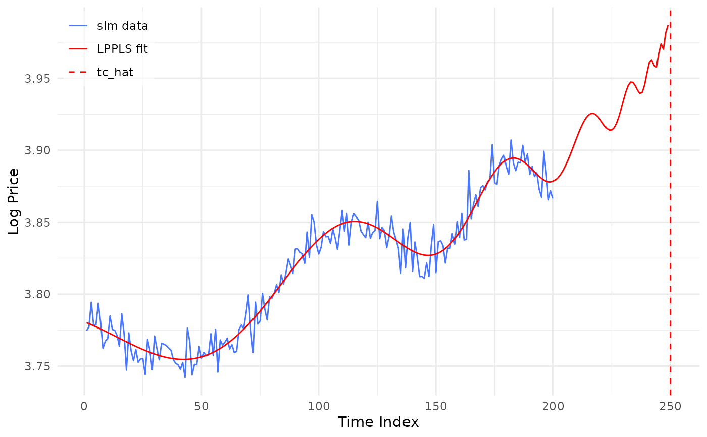
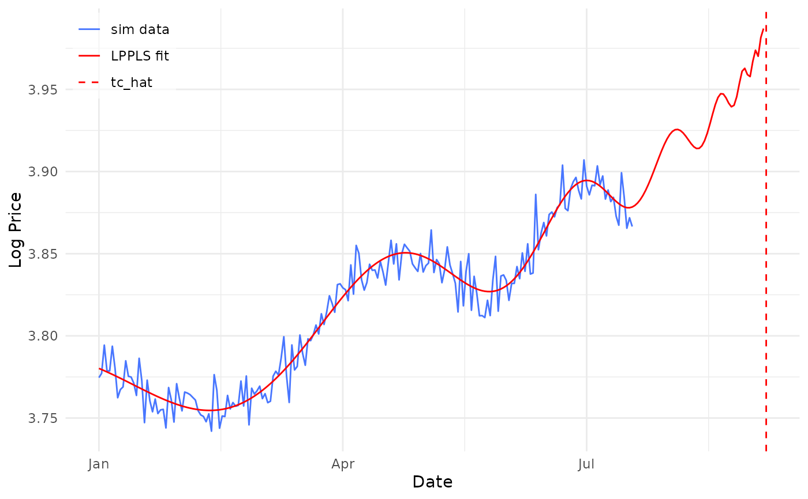
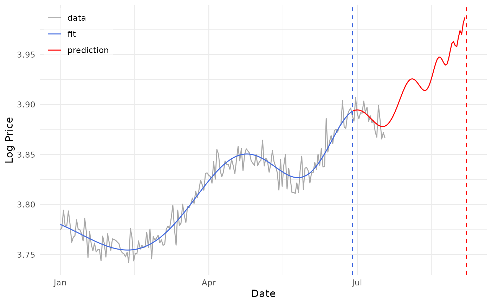

Draws the observed log-price series together with the fitted LPPLS curve, a
vertical marker at the estimated critical time \(\hat{t}_c\), and—when the
calibration end is supplied via T2—a marker at \(T_2\). Colour and line
type are merged into a single legend (by default sim data / LPPLS fit / T2 /
tc_hat). This is the same builder fit_lppls() attaches as its fit_plot
component (called there with T2 set to the calibration-window end).
Usage
fit_plot(
fit,
time_ID,
log_price,
mode = 0,
T2 = NULL,
T1 = NULL,
dates = NULL,
style = c("simulated", "empirical"),
data_label = NULL,
linewidth = 0.5
)Arguments
- fit
A named list of point estimates with elements
A,B,C1,C2,tc,m,omega(e.g.fit_lppls(...)$fit[[1]]).- time_ID
Numeric vector of time indices for
log_price.- log_price
Numeric vector of observed log-prices.
- mode
Integer, the LPPLS model variant passed to
eval_lppls()for the fitted curve (default 0, the Filimonov parameterization thatfit_lppls()calibrates).- T2
Numeric or
NULL. The calibration-window end. When supplied, a dashed marker is drawn there and added to the legend; whenNULL(default) only the \(\hat{t}_c\) marker is shown.- T1
Numeric or
NULL. The calibration-window start. When supplied, a dashed marker is drawn there and the fitted curve begins atT1rather than at the first plotted observation. This is what a rolling calibration needs: the data beforeT1is drawn but was never fitted, so a curve extending back over it would misrepresent the fit. WhenNULL(default) the curve starts at the first plotted point.- dates
NULL(default) or aDatevector the same length aslog_price, strictly increasing. When given, the x axis is drawn as a calendar axis instead of the 1..n time index: the series, the fitted curve and both markers are all mapped through it. A forecast \(\hat{t}_c\) lying past the end of the series is extrapolated at the series' median spacing, so treat such a date as approximate.- style
One of
"simulated"(default) or"empirical", selecting what the colours are asked to say."simulated"draws the series in the foreground colour and the fitted curve as a single line, with the window markers in the legend. It suits a series the caller generated, where the markers are part of the specification being checked."empirical"draws the series in grey, the way an inactive control is: an observed price series is given and cannot be otherwise. The fitted curve splits atT2into the part supported by data and the part beyond it, and only the latter is red, because pastT2the curve is a forecast and the colour is the warning. The markers stay out of the legend, leaving three entries. The split needs points on both sides ofT2; without it, or with \(\hat{t}_c\) inside the calibration window, a single line is drawn instead.- data_label
NULL(default) or a string naming the observed series in the legend. The default followsstyle:"sim data"for"simulated","data"for"empirical".- linewidth
Width of the series and fitted lines, passed to
ggplot2::geom_line(). Defaults to0.5, ggplot2's own default; a long daily series usually reads better thinner.
Examples
set.seed(123)
t <- 1:200
log_p <- eval_lppls(t, 4, -0.015, 0.002, 0.001, 250, 0.5, 9) +
rnorm(200, 0, 0.01)
est <- list(A = 4, B = -0.015, C1 = 0.002, C2 = 0.001,
tc = 250, m = 0.5, omega = 9)
# default: the 1..n time index on the x axis
fit_plot(est, t, log_p)

# the same fit on a calendar axis
fit_plot(est, t, log_p, dates = as.Date("2020-01-01") + t - 1)

# an observed series: grey data, and the forecast past T2 marked in red
fit_plot(est, t, log_p, T2 = 180, style = "empirical",
dates = as.Date("2020-01-01") + t - 1)
